Tres identidades para Evelyn Elizondo
Derecho de Familia, Costa Rica. Tres lenguajes formales distintos, cada uno completo: logotipos vectoriales, paleta, tipografía, favicon, papelería y aplicación sobre el sitio real. Nada se ha cambiado en el sitio: la decisión está pendiente.
Propuesta A · Monograma editorial de lujo

Nexo
Una E recta y una E cursiva, apoyadas sin tocarse.
La redonda es la norma: vertical, estable, de asta gruesa. La cursiva es la mano: la persona que escribe, firma y se inclina. Las dos comparten altura y filete. Se acercan por la base y se abren hacia arriba.
Esa distancia es la idea: dos personas vinculadas que siguen siendo dos. Ningún brazo toca a la otra letra, y la inclinación de 12° da movimiento sin perder autoridad.
Conversa con el titular del sitio, que ya alterna redonda y cursiva en «Derecho de familia en Costa Rica».
Logotipos
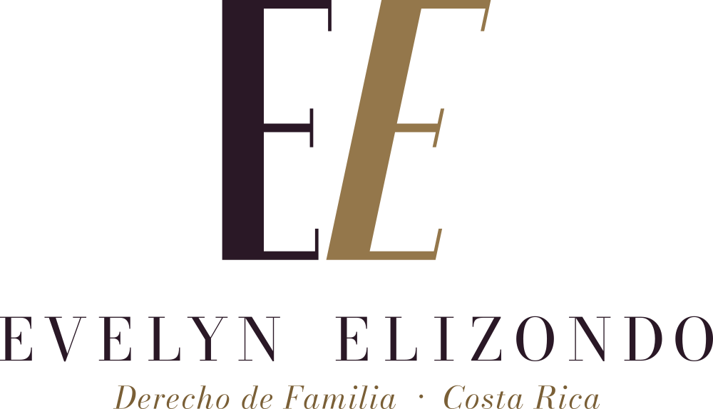
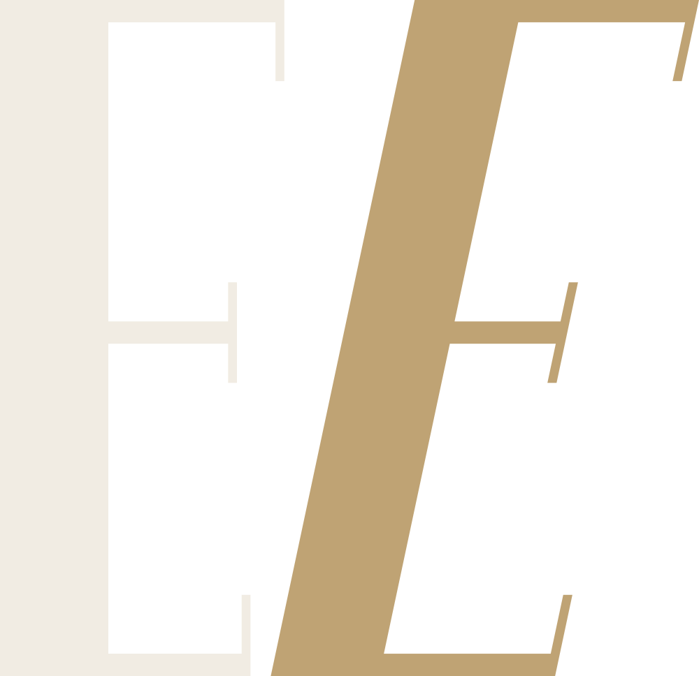
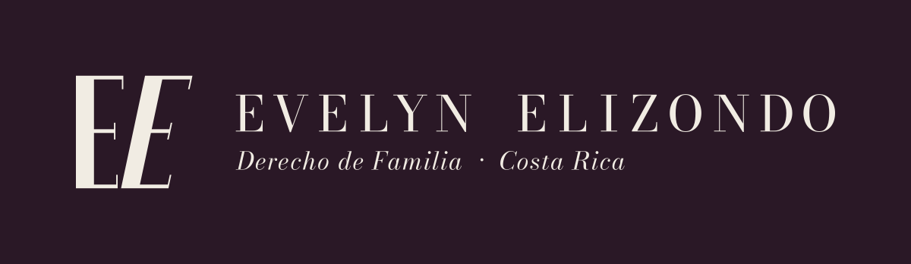
Color y tipografía
#2A1826#94774B#BFA374#7A5F36#F1ECE3#FAF7F2#6B6068Bodoni Moda: Titulares y logotipo. Versales espaciadas; cursiva para el lema.
Instrument Sans: Texto corrido, navegación y datos de contacto.
Ambas con licencia SIL Open Font License 1.1.
Favicon
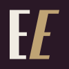
En el sitio


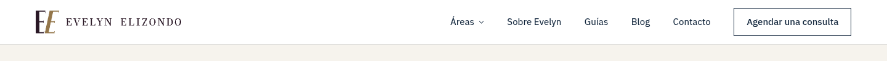
Papelería y tarjeta
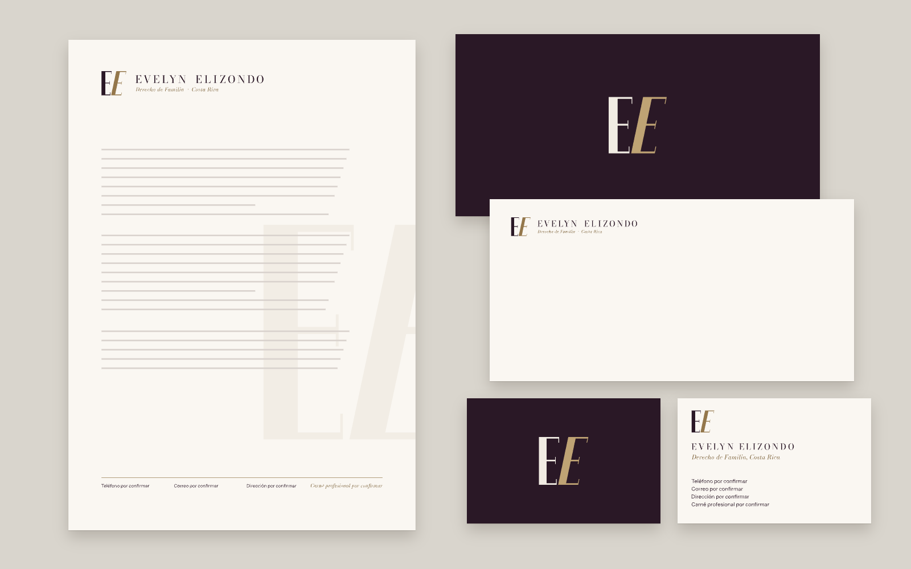
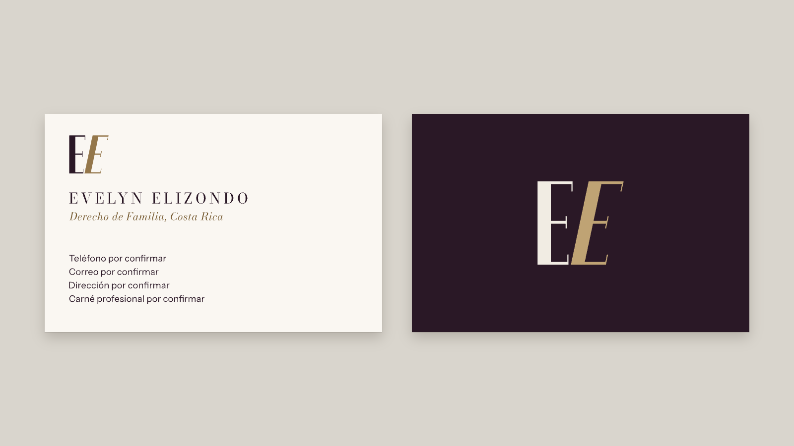
Patrón y redes


Riesgos que conviene conocer
- Mientras el sitio siga en navy, el latón de este símbolo repite el par azul y oro del sector: el cambio de marca solo se completa al cambiar la paleta.
- Bodoni tiene filetes delicados: en impresión de baja calidad use siempre la versión de cabecera, más firme. En titulares web debe fijarse un tamaño óptico bajo (opsz 20): con el automático, los filetes casi desaparecen.
- El monograma EE admite muchas soluciones parecidas en el mercado. Se debe comprobar en una búsqueda de marcas por clase 45.
Abrir la guía de marca · Guía en PDF · Lista de archivos · Tokens CSS
Propuesta B · Raíces, vínculos y crecimiento
Hebras
Tres líneas paralelas pasan de un centro a otro sin cruzarse nunca.
Dos sistemas de anillos de crecimiento, como los de un tronco cortado, quedan unidos por tres hebras. En botánica, la inosculación es el fenómeno por el que dos ramas o troncos crecen juntos y se unen.
Las tres hebras cambian de posición sin cruzarse: la que es exterior en la copa llega a ser interior en la raíz, y al revés. Esa es la lectura sobre la transformación de una familia, sin decir cómo debe terminar.
Sube en diagonal, con un lazo mayor arriba y otro menor abajo, igual que la copa ancha y la base del árbol del sitio. La regla es geométrica: solo arcos de circunferencia, sin árboles, manos, corazones ni siluetas.
Logotipos



Color y tipografía
#1D3128#B5623D#D98A64#8A4628#F3EEE4#FAF7F0#5F6A62Tenor Sans: Titulares y logotipo. Humanista con contraste, en alta y baja. Una sola variante: sin cursiva ni negrita.
Hanken Grotesk: Texto corrido, lema, navegación y datos.
Ambas con licencia SIL Open Font License 1.1.
Favicon
En el sitio
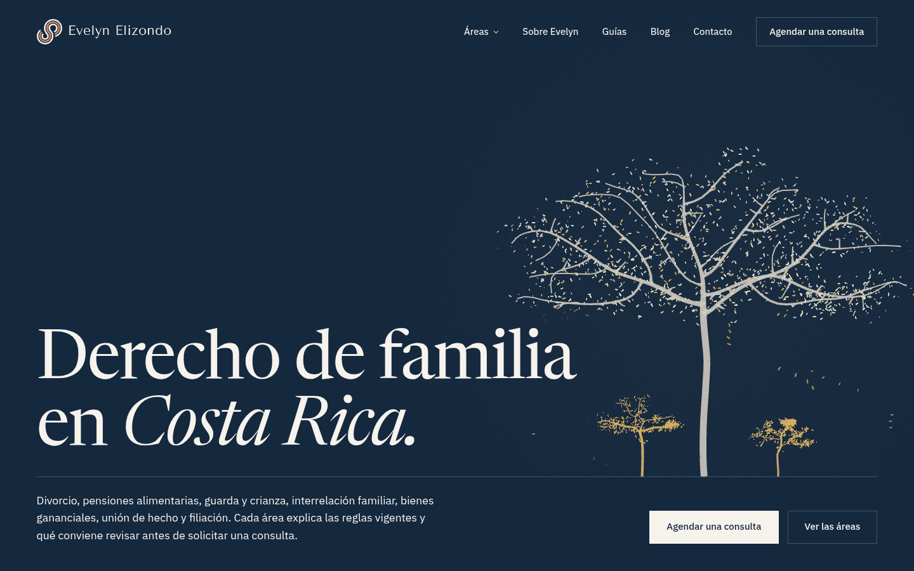


Papelería y tarjeta
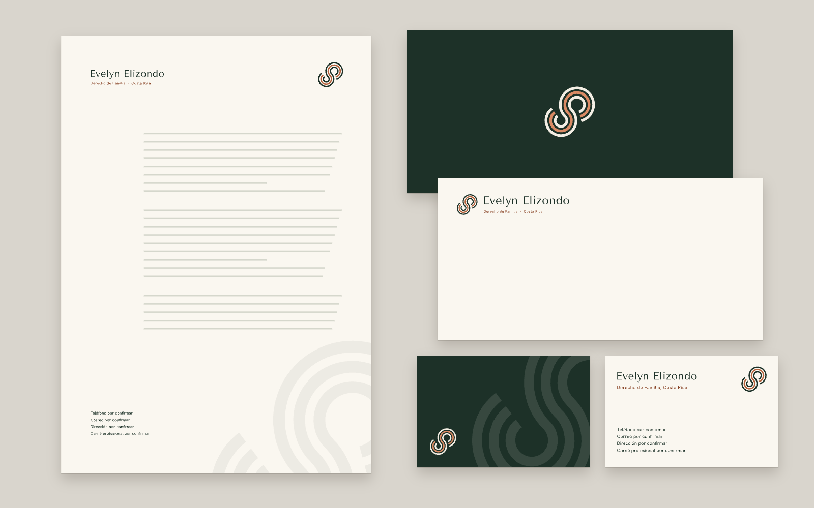
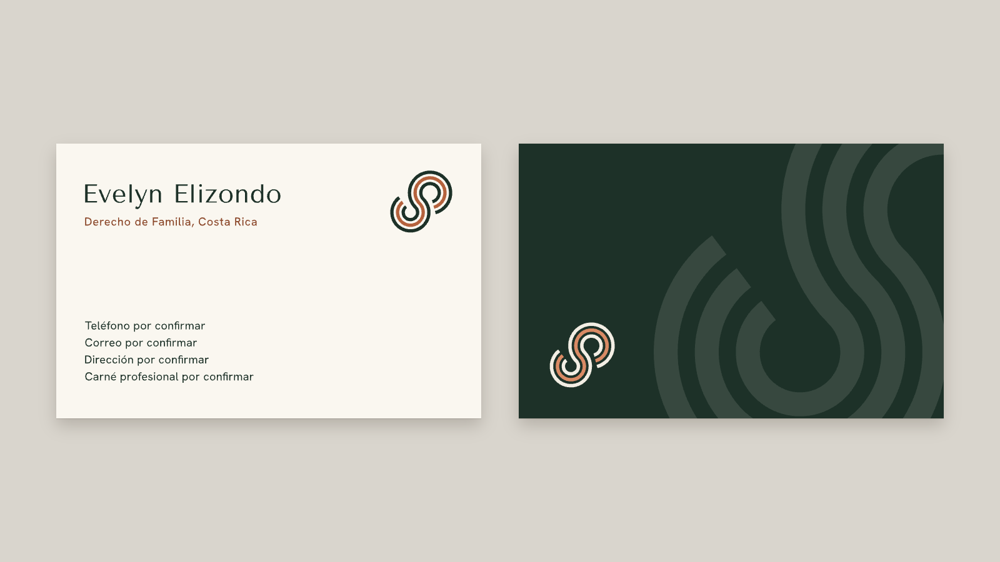
Patrón y redes

Riesgos que conviene conocer
- Tres hebras se empastan por debajo de 40 px; ahí se usa el dibujo de dos, y a 16 px el de una.
- No remite a la E. Según quien lo mire, puede leerse como una S, un 8 o un ampersand, y en una pestaña del navegador como una cadena o un icono de enlace: esa lectura es incómoda en este campo y hay que probarla.
- Un lazo continuo puede sugerir permanencia. Para quien sale de una relación violenta esa lectura no es neutra: conviene probarlo con personas ajenas al proyecto.
- La búsqueda encontró una marca registrada en EE. UU. por una firma de abogados de Nueva York (Outten & Golden LLP, n.º de serie 99079591, clases 41 y 45), descrita como figuras en ocho entrelazadas. Su dibujo es un ampersand de un solo trazo con cruces, y este son tres líneas paralelas que no se cruzan: las formas difieren, pero comparten la idea del lazo y el sector. Es otra jurisdicción y esto no es un dictamen: una persona especialista debe compararlas antes de adoptar esta propuesta.
Abrir la guía de marca · Guía en PDF · Lista de archivos · Tokens CSS
Propuesta C · Identidad tipográfica de autor

Rúbrica
El nombre firmado: la Y baja y su trazo subraya el apellido.
Según el Diccionario de la lengua española, rúbrica es el rasgo que suele ponerse en la firma después del nombre, y la palabra viene del latín rubrīca, derivado de ruber, «rojo». Por eso aquí la Y de Evelyn pierde su remate, baja y corre en rojo bajo el apellido.
La letra es Ibarra Real Nova, reconstrucción de los tipos de Gerónimo Gil para el Quijote de la Real Academia, impreso por Joaquín Ibarra en 1780. Da a la marca una raíz en la historia del libro en español.
La versión compacta usa una observación del propio nombre: EVELYN y ELIZONDO empiezan por E. Las dos palabras se alinean en esa inicial, y la rúbrica ocupa el hueco que deja la palabra más corta.
Logotipos




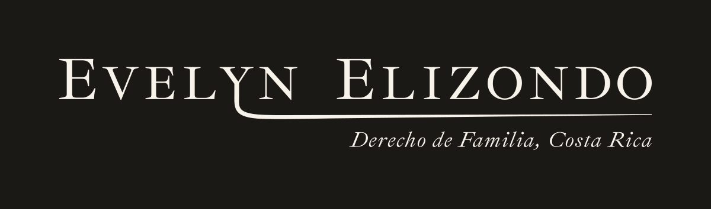
Color y tipografía
#1B1916#B5301C#E2583F#F7F3EA#FBF8F1#68635BIbarra Real Nova: Titulares, logotipo y lema en cursiva.
Source Serif 4: Texto corrido y navegación. Una serif pensada para leer en pantalla.
Ambas con licencia SIL Open Font License 1.1.
Favicon

En el sitio
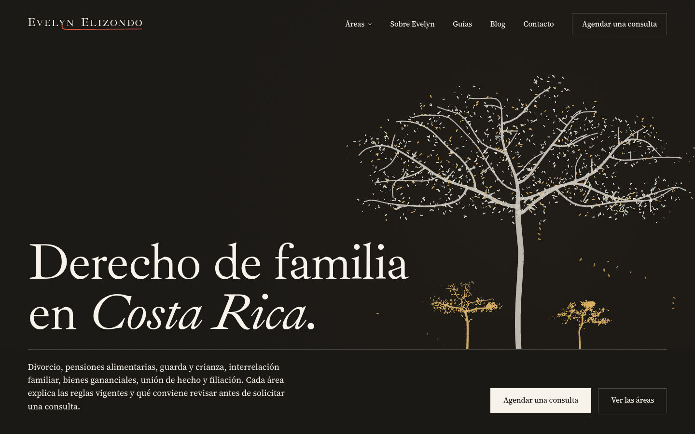
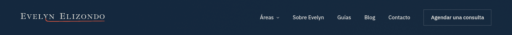

Papelería y tarjeta
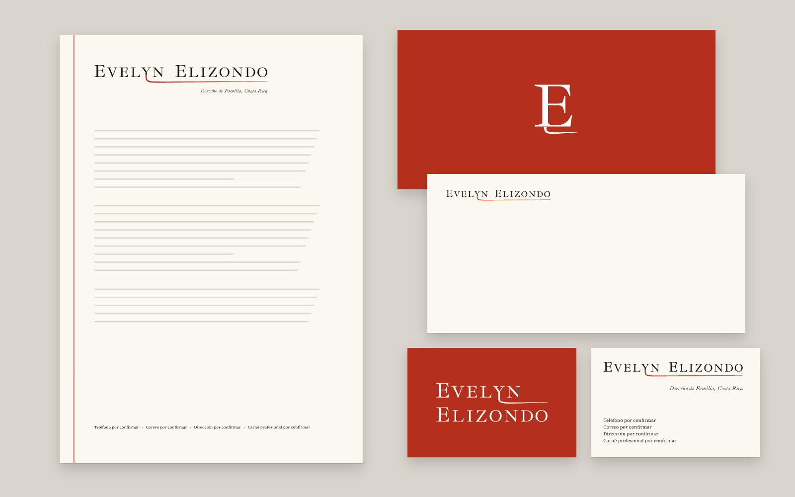
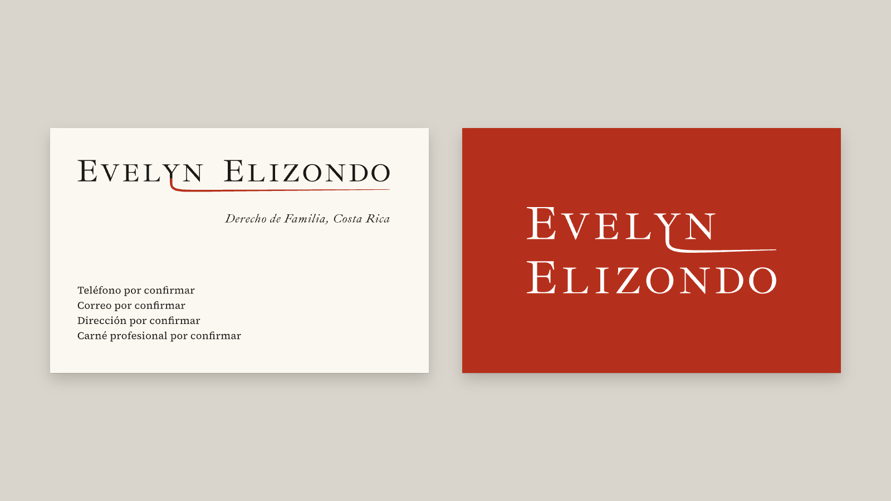
Patrón y redes


Riesgos que conviene conocer
- La marca es el nombre: por debajo de 180 px, la rúbrica se vuelve demasiado fina. A 16 px el favicon es solo una E.
- Se probó una versión en la que una sola E alojaba VELYN y LIZONDO. Se retiró: se leía «IVELYN / ILIZONDO». No debe recuperarse como logotipo.
- El rojo no sirve para fondos de texto largo. También puede evocar urgencia: debe usarse como trazo, no como superficie, salvo en piezas puntuales.
Abrir la guía de marca · Guía en PDF · Lista de archivos · Tokens CSS

Evaluación
De 1 a 5. Es un juicio razonado de quien diseñó las propuestas, no una prueba con personas usuarias: conviene contrastarlo con Evelyn y con personas ajenas al proyecto.
| Criterio | A · Nexo | B · Hebras | C · Rúbrica |
|---|---|---|---|
| Originalidad | 4La idea redonda + cursiva es propia, aunque el campo de los monogramas EE está muy poblado. Sin comparación exhaustiva. | 3Sin comparación exhaustiva; existe una marca con una idea cercana en clase 45 (serie 99079591). | 4El gesto de la Y y la alineación en la E nacen de este nombre. |
| Legibilidad | 4EE se lee desde 16 px con el dibujo reducido. Los filetes del nombre piden tamaño. | 5Nombre en alta y baja, lo más legible de las tres. Solo mide el nombre: el símbolo no contiene letras. | 4Se lee bien en línea y en bloque. La versalita pide tamaño. |
| Memorabilidad | 4La inclinación es reconocible. Memoria sin probar. | 4Fácil de describir como lazo. Memoria sin probar. | 4La línea roja es fácil de describir. Memoria sin probar. |
| Coherencia con Derecho de Familia | 4Dos que se acercan sin confundirse; sobrio ante temas duros. | 3Habla de transformación, pero el lazo o la cadena pueden leerse como atadura o permanencia. | 4La firma remite a documentos y acuerdos; es menos cálida. |
| Sofisticación | 4Editorial y contenida; con el nuevo dibujo gana claridad y se acerca al art déco. | 4Moderna y serena. Corre más riesgo de parecer de bienestar. | 5Oficio tipográfico visible. |
| Tamaños pequeños | 4El dibujo reducido se lee como EE a 16 px. Por debajo de 48 px hay que usarlo. | 3Necesita tres dibujos: 3, 2 y 1 hebras. | 3A 16 px solo queda una E, sin rúbrica. El nombre pide 180 px. |
| Integración con el sitio | 4Repite el juego redonda y cursiva del titular. Sobre navy, repite también el par azul y oro. | 4Dialoga con el árbol, pero su mejor versión pide cambiar la paleta. | 4Convive bien; Newsreader e Ibarra son dos serif muy cercanas. |
| Viabilidad técnica y licencias | 5OFL; logotipo en trazos. | 5OFL; símbolo sin fuente alguna, solo arcos. | 5OFL; logotipo en trazos. |
| Total sobre 40 | 33 | 31 | 33 |
Recomendación
Se recomienda A · Nexo, aunque empata con C a 33 puntos sobre 40 y B queda en 31: la tabla no decide. Decide el encaje con el encargo. A transmite autoridad, discreción y elegancia editorial sin depender de una metáfora emocional, contiene las iniciales, se lee como EE hasta 16 px con su dibujo reducido y tiene un eco en el sitio, porque el titular de la portada alterna redonda y cursiva.
Su reserva: sobre el navy actual, el latón repite el par azul y oro que la auditoría critica. Se puede estrenar sin cambiar la paleta, pero el cambio de marca solo se completa con su propia paleta.
Elija C · Rúbrica si quiere que la marca sea su nombre firmado, sin símbolo. Es la de mayor oficio tipográfico y la más personal, pero la menos eficaz en espacios pequeños.
Elija B · Hebras si Evelyn prefiere una marca más cálida, y acepta renovar la paleta del sitio. Antes conviene probar cómo la perciben personas ajenas al proyecto, por las lecturas de cadena y de permanencia, y que una persona especialista revise la marca similar detectada.
La decisión es de Evelyn. Las tres quedan completas y la identidad oficial del sitio no se cambió.
Proceso y estado
Bocetos descartados y ciclos de crítica

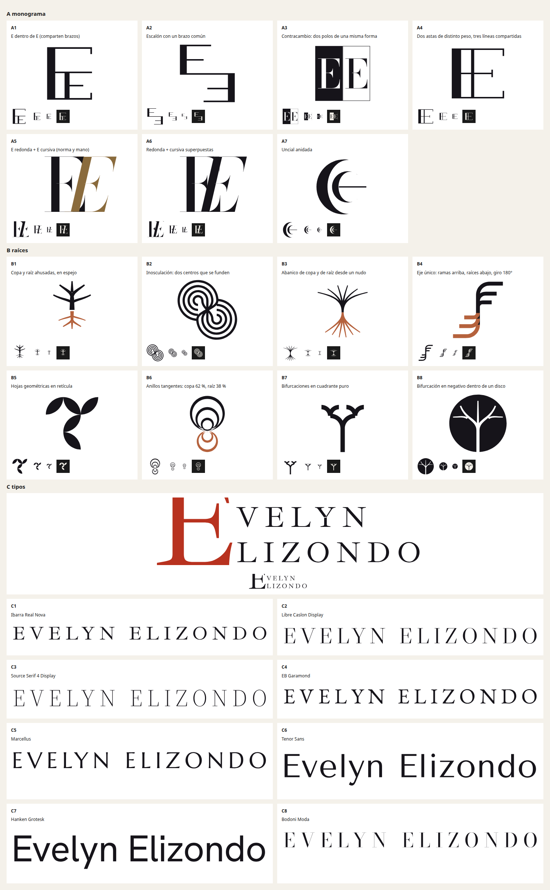

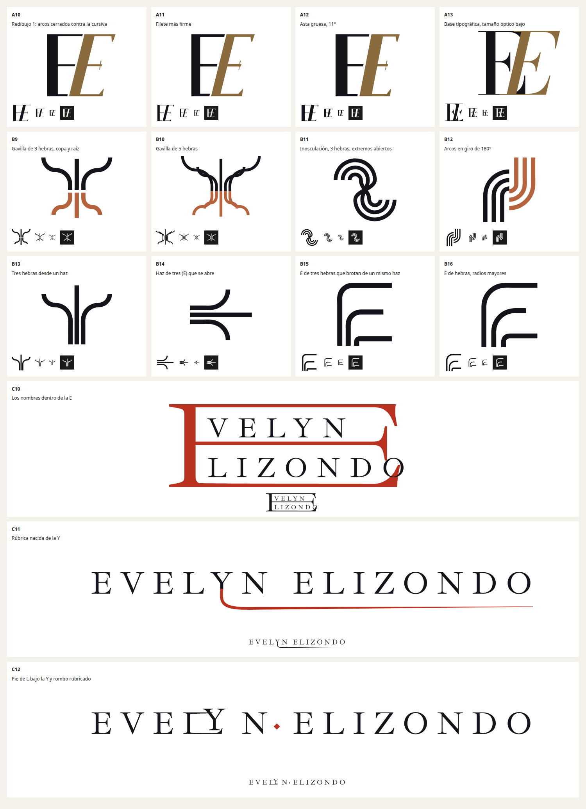

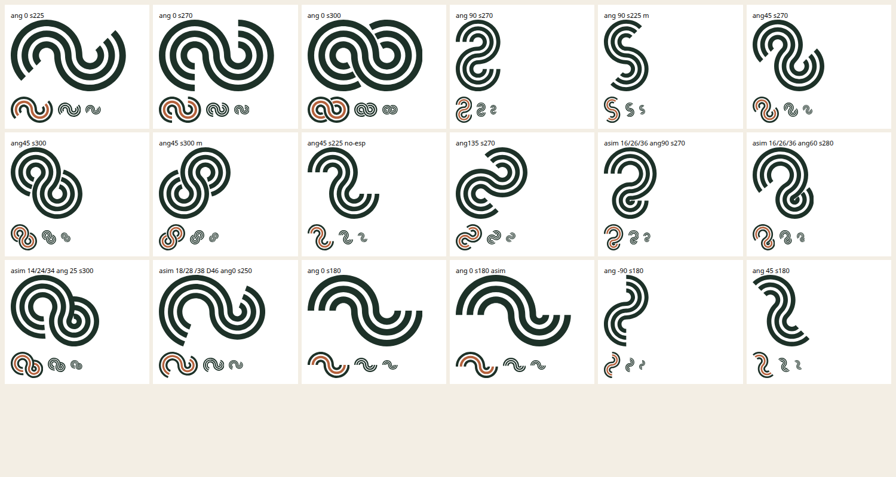

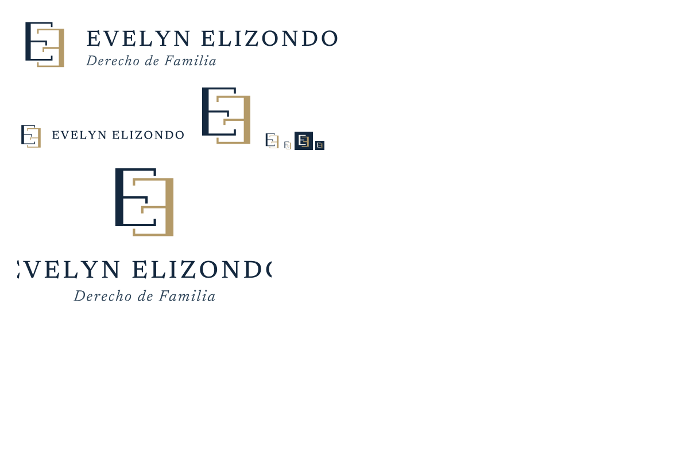
Comprobaciones automáticas
Archivos
102 SVG y 102 PNG; 0 fallos en la validación.Parecido entre isotipos
A/B: 21 % · A/C: 10 % · B/C: 12 %Solape de siluetas; 100 % serían iguales.
Vectores
Sin texto vivo, sin raster incrustado, sin scripts ni enlaces externos.Documentos
Auditoría, investigación y evaluación de herramientas · Evaluación en texto · Resultado de la validación
Lo que falta y no se pudo hacer aquí
- Decisión de Evelyn entre las tres propuestas.
- Búsqueda de anterioridades de marca en el Registro Nacional de Costa Rica. Las búsquedas web hechas no equivalen a una autorización de registro.
- Teléfono, correo, dirección y carné profesional, que siguen «por confirmar».
- Prueba de imprenta: colores CMYK aproximados y papelería sin sangrado.
- Prueba con personas: la percepción de cada marca no se ha medido.